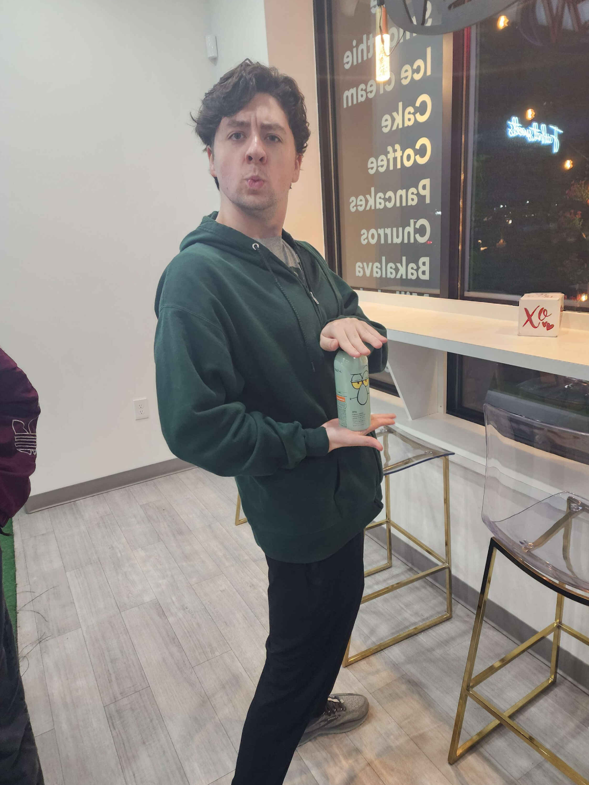

About the Author
I'm Andrew Hott, the creator of this blog, and a long time space enthusiast and lover of the unknown. This blog serves as a place for curiosity, critical thinking, and community discussion. I've always believed it to be important to question everything, in a pursuit of truth and knowledge. As a kid, my parents allowed me to always ask questions about decisions they made and rules they would place, and I believe this greatly helped my development. I plan on releasing more posts soon, covering numerous topics, old and new, as this topic has had a very interesting past couple of years.
In my free time, a spend a lot of time playing video games, both by myself and with friends, some of my favorites include:
- Cyberpunk 2077
- Terraria
- Marvel Rivals
- Elden Ring
- Civilization V
- Star Wars Jedi: Survivor
